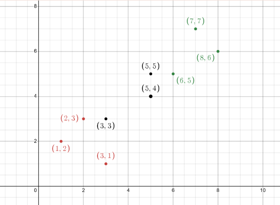
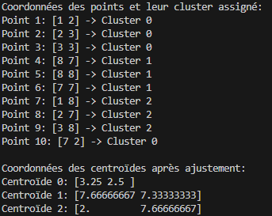
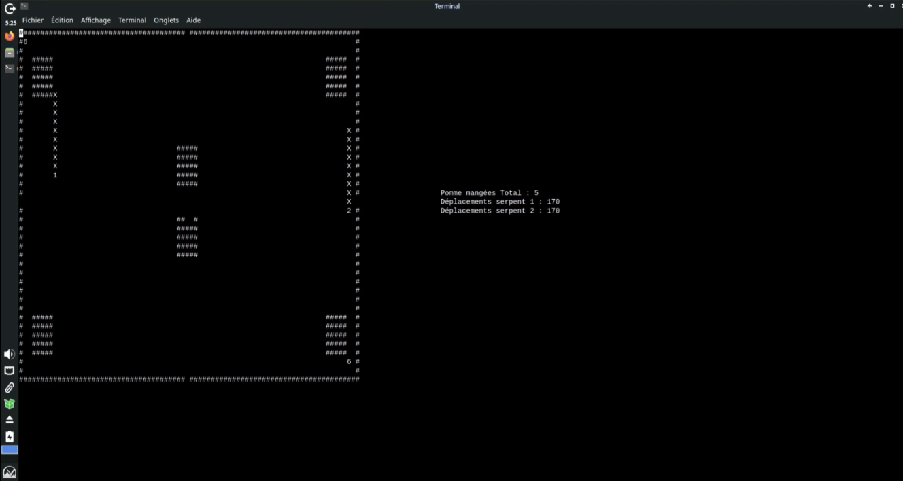
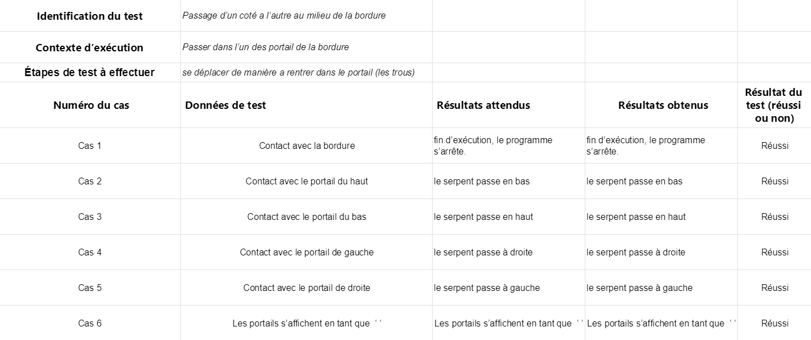
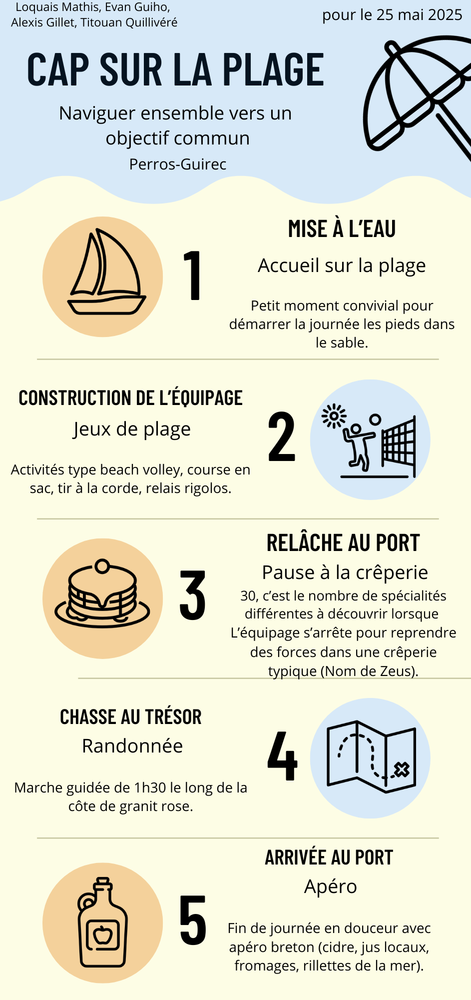
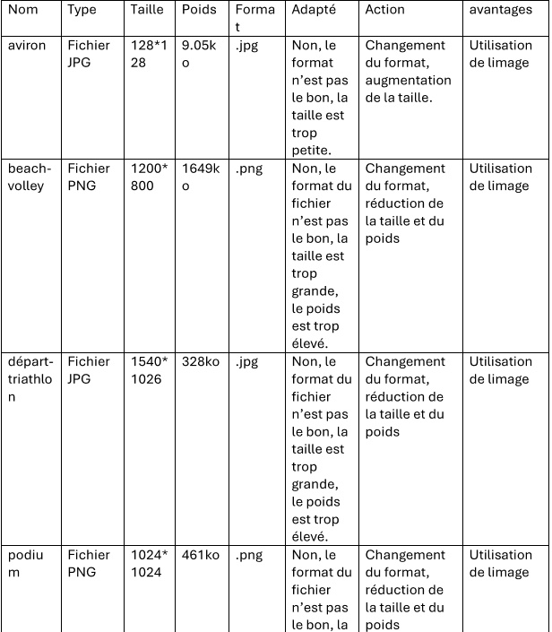
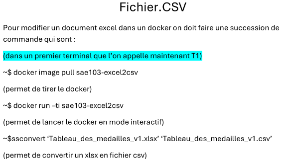
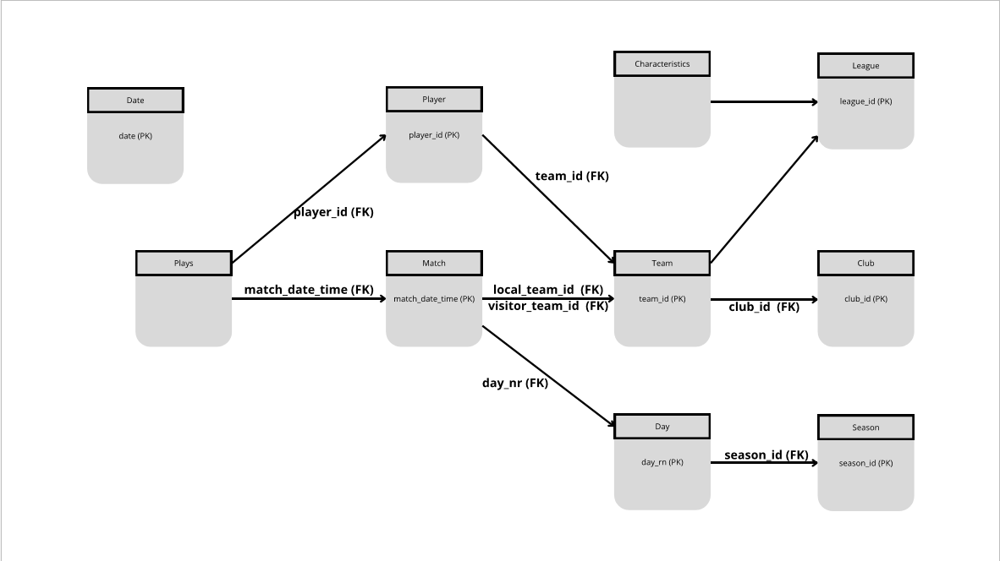
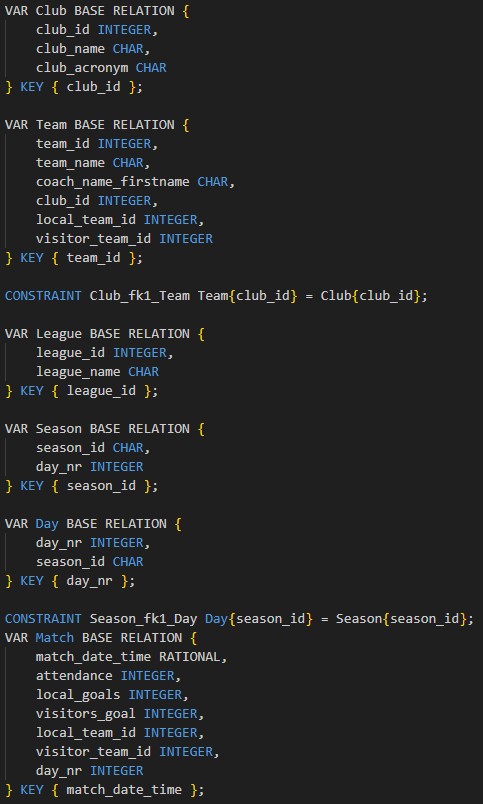

Ma formation
Mes projets
Optimiser : Exploration algorithmique d’un problème
S - Situation
Dans le cadre de la SAÉ 2.02, nous avons exploré différentes approches algorithmiques pour résoudre des problèmes d’analyse de données. Le projet portait sur la mise en œuvre des algorithmes KNN (K-Nearest Neighbors) et K-Means.
T - Tâche
L’objectif était de développer un programme capable de classer ou de regrouper des données efficacement en optimisant précision, vitesse d’exécution et lisibilité des résultats. Nous avons également comparé les performances des deux méthodes.
A - Action
J’ai implémenté l’algorithme KNN en Python, en prenant en compte le traitement des données d’entrée, les distances, et la visualisation graphique des résultats. J’ai aussi participé à l’ajustement des paramètres pour améliorer la précision.
R - Résultat
Le programme fonctionnait correctement et a permis d’obtenir des résultats fiables. Cette SAÉ m’a permis de mieux comprendre les enjeux de l’algorithmique en data science, ainsi que la rigueur nécessaire pour évaluer les performances d’un algorithme.
Captures d'écran du programme
 Conduire : Recueil de besoins
S - Situation
Dans le cadre de la SAÉ 1.05, nous avons travaillé en équipe pour répondre à une demande client fictive visant à formaliser les besoins liés à la création d’un site web sur un sport olympique.
T - Tâche
Le projet consistait à recueillir les besoins du client à travers des échanges continus, puis à concevoir un site informatif en structurant les contenus et les pages. J’étais responsable de la page sur la discipline choisie : le judo.
A - Action
J’ai rédigé le contenu, structuré la page HTML et assuré sa cohérence visuelle avec le reste du site. J’ai également collaboré avec mes coéquipiers pour harmoniser la navigation et le design général du projet.
R - Résultat
Le site final a été validé avec succès. Il répondait aux attentes fonctionnelles du client fictif et montrait notre capacité à organiser un projet en mode agile, à dialoguer efficacement et à produire un rendu professionnel.
Captures d'écran du site


Réaliser : Implémentation d’un besoin client
S - Situation
Dans le cadre d’une SAÉ, nous devions répondre à une demande client fictive en développant une application simple. Le besoin exprimé était la création d’un jeu Snake fonctionnel, jouable en mode console.
T - Tâche
Notre objectif était de concevoir, coder, tester et intégrer ce jeu en respectant les contraintes du langage C, avec une interface utilisateur basique mais fluide, et une logique de jeu cohérente.
A - Action
J’ai participé à la conception de l’algorithme de déplacement du serpent, à la gestion des collisions et à l’affichage dans la console. J’ai aussi effectué plusieurs phases de test pour corriger les bugs rencontrés.
R - Résultat
Le jeu était pleinement fonctionnel, respectait les attentes du client et a été livré dans les temps. Ce projet nous a permis de renforcer nos compétences en programmation procédurale et en gestion de projet.
Captures d'écran du jeu
 Collaborer – Projet de travail d'équipe : Vidéo Team Building
S - Situation
Dans le cadre d’un projet de cohésion d’équipe, nous avons dû concevoir et présenter un atelier de team building, suivi de la réalisation d’une vidéo teaser illustrant notre concept.
T - Tâche
L’objectif était de mettre en valeur nos compétences en communication, organisation et créativité, à travers la planification d’un événement collaboratif et sa promotion via une courte vidéo percutante.
A - Action
J’ai participé à la conception du scénario, au tournage des scènes ainsi qu’au montage de la vidéo. J’ai veillé à ce que le rythme soit dynamique et que le message soit clair et attractif pour les futurs participants.
R - Résultat
La vidéo a été bien reçue, jugée professionnelle et engageante. Ce projet nous a permis de développer nos soft skills, de renforcer la cohésion du groupe et de mieux appréhender la gestion collective d’une tâche créative.
la vidéo et Infographie

Administrer : Installation d’un poste pour le développement
S - Situation
Lors d’un projet technique, nous devions concevoir une solution permettant de convertir automatiquement différents types de documents (images, fichiers Excel, etc.) afin de les rendre exploitables sur un site web.
T - Tâche
L’objectif était de créer un environnement de traitement automatisé, réutilisable et portable, capable de transformer des fichiers dans le bon format via des scripts exécutés dans un conteneur Docker.
A - Action
J’ai rédigé des scripts shell et PHP pour automatiser les conversions, puis nous les avons encapsulés dans un conteneur Docker. Les script réaliser on permit de faciliter la conversion des documents.
R - Résultat
Notre solution fonctionnait de manière fiable, elle permettait de traiter plusieurs fichiers en quelques secondes. Ce projet m’a permis de consolider mes compétences en déploiement, scripting et conteneurisation avec Docker.
Captures d'écran du projet Docker
 Gérer – Création d’une base de données
S - Situation
Dans le cadre d’un projet de base de données, nous avons travaillé sur la modélisation et la mise en œuvre d’un schéma relationnel complet à partir d’un diagramme UML fourni.
T - Tâche
Notre mission était d’élaborer le diagramme des contraintes d’intégrité référentielles, puis de rédiger le code SQL permettant de créer les tables et les relations dans une base de données fonctionnelle.
A - Action
J’ai extrait les entités et les relations à partir du diagramme UML, puis conçu un script SQL structuré avec les clés primaires et étrangères, les types de données, ainsi que les contraintes de cohérence nécessaires.
R - Résultat
Le schéma relationnel et le script SQL ont été validés sans erreur. Ce projet m’a permis de mieux maîtriser la logique de conception de bases de données relationnelles et de renforcer ma rigueur dans l’écriture de requêtes SQL complexes.
Captures d'écran du projet


Compétences
- Programmation : C, Java, Python
- Web : HTML, CSS, Bootstrap
- Base de données : SQL, PostgreSQL
- Conception : Ergonomie, Maquettage, UML
- Gestion de projet : GIT, Gantt
- Système : Windows, Linux, Bash, PHP, Docker
Langues
- Anglais : C1 – aisance écrite et orale, bon anglais technique
- Espagnol : B1
Qualités
- Travail d’équipe
- Pédagogie
- Adaptabilité
Centres d’intérêt
- Basketball (pratique en club, compétition et arbitrage)
- Dessin (pratique en autodidacte)
Stages
- NAVAL GROUP (2022) – Découverte des secteurs industriels, cybersécurité, travail en équipe
- École primaire Notre Dame de Lourdes (2021) – Initiation à l’informatique auprès d’élèves, pédagogie